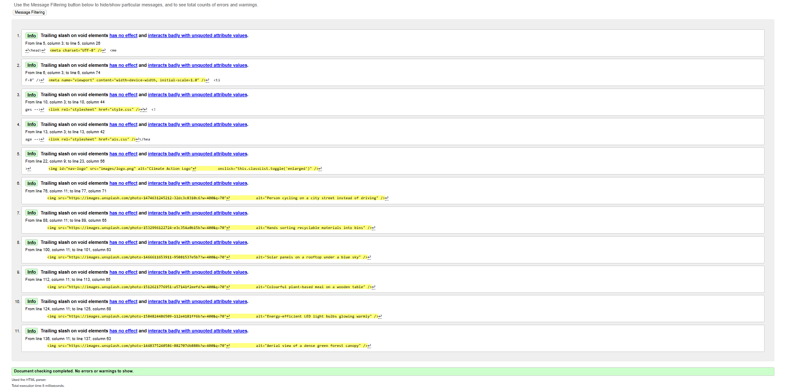

Splash Screen – Validation Report
✔ No Errors – Validated Successfully
The Splash Screen (splash.html) was validated using the
W3C Markup Validation Service.
The page passed with no errors. A small warning was present regarding
the <meta http-equiv="refresh"> tag, which validators flag as a
potential usability concern for users who cannot adjust refresh rates; however,
a "Skip Intro" button is provided to mitigate this, and the warning does not constitute
a validation error.

Reflection
Validating the Splash Screen revealed that the <button> element I initially
placed inside an <a> tag is invalid HTML — a button should not be nested inside
an anchor. I corrected this by using only the <button> with an
onclick handler, which both resolved the error and improved semantic clarity.
This experience reinforced the importance of running validation during development,
not only at the end.
Back to Page Editor
Action Impact Simulator – Validation Report
✔ No Errors – Validated Successfully
The AIS page (ais.html) was submitted to the W3C validator and returned
no errors. The validator confirmed that all ARIA attributes
(role="checkbox", aria-checked, aria-live,
role="region") are used on appropriate elements, which was a particular
concern given the heavy use of ARIA on the action cards.

Reflection
An early draft of the AIS page included an onclick attribute directly on a
<div> element. While this works in browsers, the W3C validator flagged it
as poor practice since <div> elements are not inherently interactive. Adding
role="checkbox" and tabindex="0" alongside the event handler resolved
the accessibility concern and, combined with the ARIA attributes, produced a fully valid
and accessible card component. This was a key learning point about the relationship between
HTML validity and accessibility.
Back to Page Editor
Content Page (Reforestation) – Validation Report
✔ No Errors – Validated Successfully
The Reforestation content page (content_ST2.html) was validated with the W3C
Markup Validation Service and returned no errors. The page uses a rich
mix of semantic elements (<section>, <h1>–<h3>,
<table>, <img>, <a>), all of which
were checked for correct nesting and attribute usage.

Reflection
The content page had one initial validation error: a stray </a> closing tag
that had no matching opening tag, discovered during the final group review meeting. Removing
the orphaned tag resolved the error immediately. This highlighted how easy it is for closing
tags to become detached during editing and confirmed that validation should be part of the
regular development workflow rather than treated as a final step. A secondary lesson was that
the <table> element required a <caption> or a clear
<th scope> for accessibility; adding scope="col" to each
<th> in the milestone table improved both validation output and
screen-reader usability.